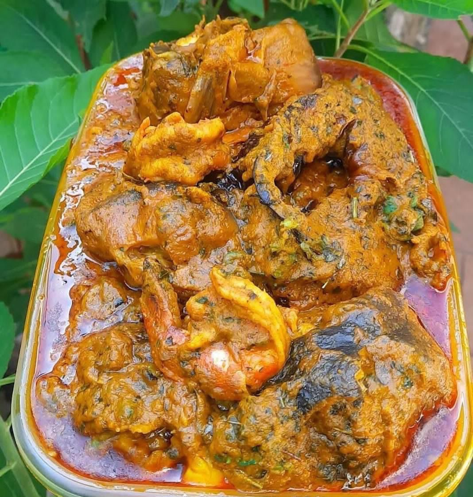
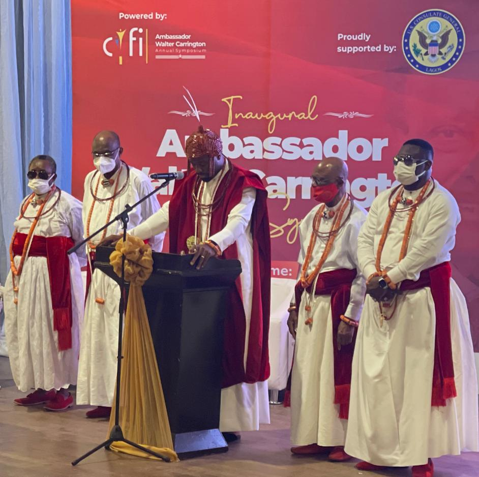
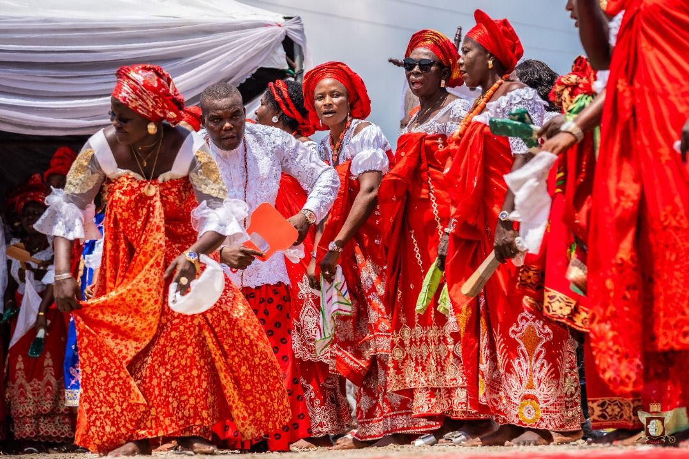
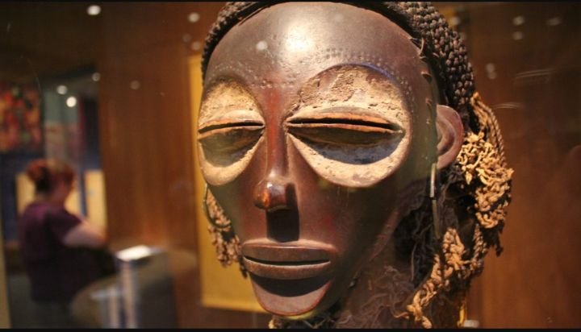
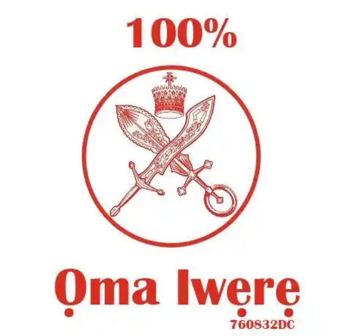
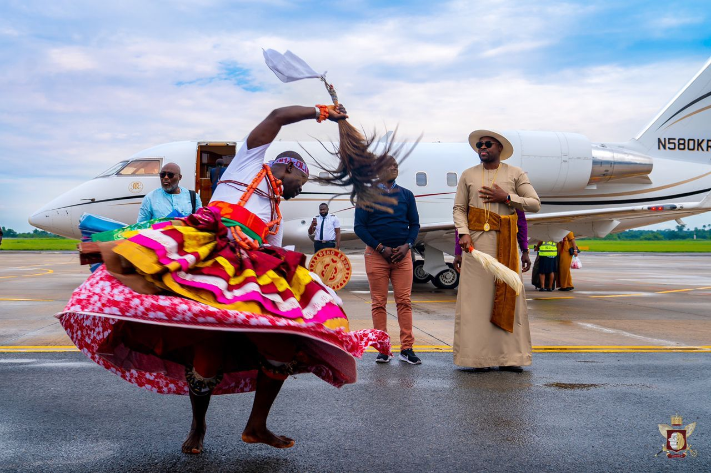

This is an online platform mainly designed and structured toward providing information about the itsekiri people and warri kingdom in its entirety.
|  |  |  | |
|---|---|---|---|
| Iwere Kitchen | Iwere Library | historical works | Promote our Culture |
|  |  |  | |
|---|---|---|---|
| Iwere Innovations | Artifacts | News | Other Resource like Iwere |
It is aimed at providing constant and reliable informations on the itsekiri diverse cultural heritage, traditions, values, and their significance.
is to provide a one stop destination where all information about the Iwere culture and traditions, and historical background can be accessed.
is to educate and provide information about the itsekiri cultural heritage and traditions, and provide access to the itsekiri historical background
Promoting and Preserving the Itsekiri culture and traditions.